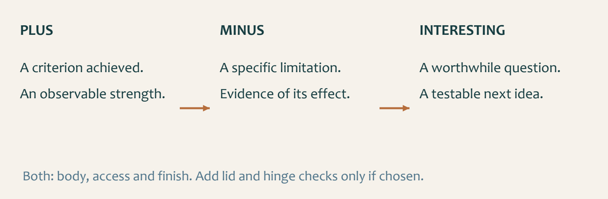

Module presentation
Learn with the slides
Use the presentation to preview the three theory sections, guided checks and written responses before beginning the module.
Optional-lid update · 10 September 2026: Lid-specific slides apply only if you select a lid with the teacher. For an open box, use the module’s opening, edge and access checks instead. This update supersedes mandatory-lid wording in the original presentation.
Project resource and evidence
Use the resource and save evidence
Use the Small Box project resource alongside the module, then open the folio when your evidence is ready.
Student evidence
Your details
Autosave is on
Theory 1
Optional lid or open-box checks
A lid is optional. Confirm and record your approved open or lidded-box choice. For the lidded version, the approved sequence includes lid chamfers and, where specified, teacher-supplied or teacher-approved small hinges. A chamfer is a bevelled edge. The exact chamfer dimensions, hinge position and fitting method remain controlled by the approved project source and teacher demonstration.
If your box has a lid, check that it aligns with the box, moves as intended and does not rely on forcing. Before hinge fitting, confirm the hardware is suitable and the required teacher check has occurred. For an open box, check the opening and exposed edges, access to the intended contents and overall function. Record an observation or correction for the version you are making.
- For a selected lid, check alignment and movement.
- For a hinged lid, confirm hinge suitability and approval.
- For an open box, check the opening, edge condition and access; record any teacher-approved correction.
- Use only the demonstrated process and record the applicable checks before and after any correction or fitting.
Theory 2
Surface readiness and finish controls

A surface is ready when it is clean, dry and even, with no unresolved defects that require correction. One smooth area does not prove the whole box is ready.
The teacher, current school SOP and approved product information control the exact finish and application process. Required PPE, ventilation and handling controls remain active during finishing.
- Inspect the full surface and correct unresolved issues.
- Confirm the approved product and process.
- Record observations between checks.
- Allow the approved process to control handling and curing.
Theory 3
Final quality and evidence review

The final review should include joint condition, box stability, surface condition, finish quality and access to the intended contents. Include lid movement and hinge security only where those features are fitted. Record what was observed rather than relying on general claims.
A PMI review identifies a supported Plus, an honest Minus and an Interesting question or next improvement. A remaining limitation should be stated clearly with a realistic way to improve it in a future project.
Guided practice
Weeks 5-6 knowledge checks
Use final-stage checks and reflection language confidently before completion.
Apply your learning
Scaffolded written responses
Write first, then compare your response with the appropriate response example.
Finish the two-week block
Save your evidence
Your work saves in this browser, but browser storage is not the official submission. Download this module PDF before changing devices or clearing browser data.
No marks, answers or personal details are sent from this webpage.